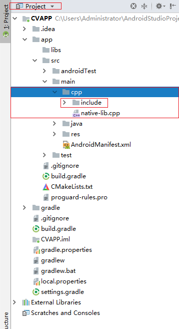

Android平台使用JNI方式调用OpenCV配置
本文主要介绍 OpenCV3.4.2 在 android studio2.3 中的配置，并使用 JNI 方式调用 OpenCV 中 C/C++ 层函数。
Android Studio在2.2版本更新之后加入了CMAKE方式配置NDK的方法，这大大简化了之前通过Android.mk和Application.mk两个本地配置文件进行NDK开发的方式。这种方法在后续更新的版本中不断增强，越来越好用，越来越不会出问题。本文主要介绍OpenCV3.4.2在android studio2.3中的配置，并使用JNI方式调用OpenCV中C/C++层函数。并使用配置的环境创建一个Android应用Demo。
1. 准备
本文使用的环境如下：
- Windows 10 Enterprise 64bit
- Android Studio 2.3
- OpenCV for Android 3.4.2
- Android NDK 18
- CMAKE
首先需要到OpenCV官网下载opencv-3.4.2-android-sdk.zip文件，这个压缩包是编译好的，里面包含有可在Android平台上使用的动态库文件和静态库文件。
在android studio中新建一个工程，创建的时候选中支持C++. 如下图所示，这里我选择了使用C++11，因为OpenCV中有很有C++11的新特性的使用。

2. 添加OpenCV库文件
解压下载好的opencv-3.4.2-android-sdk.zip。将.\opencv-3.4.1-android-sdk\OpenCV-android-sdk\sdk\native\jni\include 这个文件夹拷贝到cpp目录下，如下图所示。 
然后再src/main目录下创建一个名为jniLibs的目录， 然后将\opencv-3.4.2-android-sdk\OpenCV-android-sdk\sdk\native\libs目录下的动态库文件全部拷贝到这个目录下。 到了这一步，我们就可以在工程中使用引入的库文件了。
3. 在project中引入opencv
首先是要去CmakeList.txt文件中去添加我们引入的新文件。下面贴出的是修改好的文件，为了方便看已经将大部分自带的注释都删除掉了。这里主要设置的是3个地方，第一个是设置opencv头文件的目录，这是为了让cpp文件在编译的时候能找到OpenCV中类或函数的定义。第二个就是添加opencv动态库。第三就是要将opencv的动态库链接到native-lib中，这样app只需要load native-lib就可以调用opencv了。 使用到的cmake指令：
- include_directories 函数设置了include文件夹的路径
- add_library 函数设置库名和类型，其中libopencv_java3 是用户自定义的变量名，前后保持一致即可，SHARE 表示引入的库是动态链接库
- set_target_properties 设置了OpenCV的动态链接库的路径 target_link_libraries 具有依赖关系的动态库链接到指定目标上，链接顺序需符合gcc链接规则，这里我们把libopencv_java3和log链接到了native-lib上。
cmake_minimum_required(VERSION 3.4.1)
# 设置include文件夹的地址
include_directories(${CMAKE_SOURCE_DIR}/src/main/cpp/include)
# 设置opencv的动态库
add_library(libopencv SHARED IMPORTED)
set_target_properties(libopencv PROPERTIES IMPORTED_LOCATION ${CMAKE_SOURCE_DIR}/src/main/jniLibs/${ANDROID_ABI}/libopencv_java3.so)
add_library( # Sets the name of the library.
native-lib
# Sets the library as a shared library.
SHARED
# Provides a relative path to your source file(s).
src/main/cpp/native-lib.cpp )
find_library( # Sets the name of the path variable.
log-lib
# Specifies the name of the NDK library that
# you want CMake to locate.
log )
target_link_libraries( # Specifies the target library.
native-lib
libopencv
# Links the target library to the log library
# included in the NDK.
${log-lib} )
这个文件配置完基本就可以直接在cpp中使用opencv了，网上很多配置的方法中说要在app下的build.gradle里面进行修改，其实完全可以不修改也是可以运行的。下面我们就试试在项目中使用opencv将图片进行一下处理。
4. 在project中使用opencv
首先在工程中添加一张图，作为我们图像处理的原材料。这里，我拷贝一张名为abc.jpg的图像到drawable下。 然后修改布局文件：
<?xml version="1.0" encoding="utf-8"?>
<LinearLayout
xmlns:android="http://schemas.android.com/apk/res/android"
xmlns:tools="http://schemas.android.com/tools"
xmlns:app="http://schemas.android.com/apk/res-auto"
android:layout_width="match_parent"
android:layout_height="match_parent"
android:orientation="vertical"
android:gravity="center"
tools:context="com.ay.cvdemo.MainActivity">
<TextView
android:id="@+id/sample_text"
android:layout_width="wrap_content"
android:layout_height="wrap_content"
android:text="Hello World!"
app:layout_constraintBottom_toBottomOf="parent"
app:layout_constraintLeft_toLeftOf="parent"
app:layout_constraintRight_toRightOf="parent"
app:layout_constraintTop_toTopOf="parent" />
<LinearLayout
android:layout_width="match_parent"
android:layout_height="wrap_content"
android:layout_weight="1"
android:orientation="vertical">
<ImageView
android:id="@+id/image"
android:layout_width="match_parent"
android:layout_height="match_parent"
android:layout_weight="1"
app:srcCompat="@drawable/abc" />
</LinearLayout>
<LinearLayout
android:layout_width="match_parent"
android:layout_height="wrap_content"
android:layout_weight="1"
android:orientation="horizontal">
<Button
android:id="@+id/button_gray"
android:layout_width="match_parent"
android:layout_height="wrap_content"
android:layout_weight="1"
android:text="灰度图" />
<Button
android:id="@+id/button_src"
android:layout_width="match_parent"
android:layout_height="wrap_content"
android:layout_weight="1"
android:text="原始图" />
</LinearLayout>
</LinearLayout>
然后修改MainActivity.java
package com.ay.cvdemo;
import android.graphics.Bitmap;
import android.graphics.BitmapFactory;
import android.support.v7.app.AppCompatActivity;
import android.os.Bundle;
import android.view.View;
import android.widget.Button;
import android.widget.ImageView;
import android.widget.TextView;
public class MainActivity extends AppCompatActivity implements View.OnClickListener{
// Used to load the 'native-lib' library on application startup.
static {
System.loadLibrary("native-lib");
}
private Button btn_src;
private Button btn_gray;
private ImageView imageView;
private Bitmap bitmap;
@Override
protected void onCreate(Bundle savedInstanceState) {
super.onCreate(savedInstanceState);
setContentView(R.layout.activity_main);
// Example of a call to a native method
TextView tv = (TextView) findViewById(R.id.sample_text);
tv.setText(stringFromJNI());
btn_src = (Button)findViewById(R.id.button_src);
imageView = (ImageView)findViewById(R.id.image);
bitmap = BitmapFactory.decodeResource(getResources(),R.drawable.abc);
imageView.setImageBitmap(bitmap);
btn_src.setOnClickListener(this);
btn_gray = (Button)findViewById(R.id.button_gray);
btn_gray.setOnClickListener(this);
}
public void showImage(){
bitmap = BitmapFactory.decodeResource(getResources(),R.drawable.abc);
imageView.setImageBitmap(bitmap);
}
public void gray(){
int w = bitmap.getWidth();
int h = bitmap.getHeight();
int[] piexls = new int[w*h];
bitmap.getPixels(piexls,0,w,0,0,w,h);
int[] resultData = Bitmap2Gray(piexls, w, h);
Bitmap resultImage = Bitmap.createBitmap(w,h, Bitmap.Config.ARGB_8888);
resultImage.setPixels(resultData,0,w,0,0,w,h);
imageView.setImageBitmap(resultImage);
}
@Override
public void onClick(View v) {
switch (v.getId()) {
case R.id.button_src:
showImage();
break;
case R.id.button_gray:
gray();
break;
}
}
/**
* A native method that is implemented by the 'native-lib' native library,
* which is packaged with this application.
*/
public native String stringFromJNI();
public native int[] Bitmap2Gray(int[] pixels, int w, int h);
@Override
public void onResume(){
super.onResume();
}
}
然后是native-lib.cpp文件
#include <jni.h>
#include <string>
#include <opencv2/opencv.hpp>
#include <iostream>
using namespace std;
using namespace cv;
extern "C"
JNIEXPORT jintArray JNICALL
Java_com_ay_cvdemo_MainActivity_Bitmap2Gray(JNIEnv *env,
jobject instance,
jintArray buf,
jint w,
jint h) {
jint *cbuf;
jboolean ptfalse = false;
cbuf = env->GetIntArrayElements(buf, &ptfalse);
if(cbuf == NULL){
return 0;
}
Mat imgData(h, w, CV_8UC4, (unsigned char*)cbuf);
// 注意，Android的Bitmap是ARGB四通道
cv::cvtColor(imgData, imgData, CV_BGRA2GRAY);
cv::cvtColor(imgData, imgData, CV_GRAY2BGRA);
int size=w * h;
jintArray result = env->NewIntArray(size);
env->SetIntArrayRegion(result, 0, size, (jint*)imgData.data);
env->ReleaseIntArrayElements(buf, cbuf, 0);
return result;
}
extern "C"
JNIEXPORT jstring JNICALL
Java_com_ay_cvdemo_MainActivity_stringFromJNI(
JNIEnv* env,
jobject /* this */) {
std::string hello = "Hello from C++";
return env->NewStringUTF(hello.c_str());
}
做完上述工作之后就可以在虚拟机上测试运行了。
- 原文作者：Binean
- 原文链接：https://bzhou830.github.io/post/20190103Android%E5%B9%B3%E5%8F%B0%E4%BD%BF%E7%94%A8JNI%E6%96%B9%E5%BC%8F%E8%B0%83%E7%94%A8OpenCV%E9%85%8D%E7%BD%AE/
- 版权声明：本作品采用知识共享署名-非商业性使用-禁止演绎 4.0 国际许可协议进行许可，非商业转载请注明出处（作者，原文链接），商业转载请联系作者获得授权。